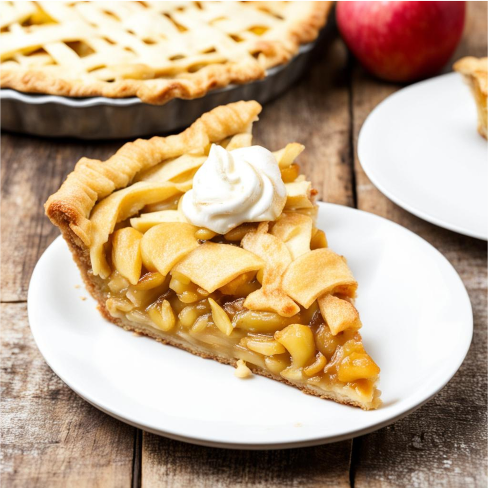

Apple Pie

Description
This amazing apple pie recipe belonged to my grandmother.
I have never seen another one quite like it! It will always be my favorite and has won several first place prizes in local competitions.
It makes the perfect dessert for family dinners or during the holidays, topped with whipped cream or ice cream, or alongside a slice of Cheddar cheese.
Ingredients
- Apples: This recipe calls for eight small Granny Smith apples.
- Butter and Flour: The filling starts with butter and all-purpose flour cooked into a paste.
- Sugars: A blend of white and brown sugar creates the perfect sweet flavor with a hint of warmth.
- Pie crust: Use a store-bought double crust pie pastry or make your own at home.
Steps
- Make the filling: On the stove, make a paste with flour and butter. Add the sugar and water and bring to a boil. Simmer, then remove from heat.
- Assemble the pie: Press one crust into a pie plate. Place the sliced apples on the bottom crust.
Use the top crust to make a lattice crust according to the recipe below. Pour the butter-sugar mixture over the lattice crust.
- Bake the pie: Bake the pie in a preheated oven until the apples are soft and the crust is golden brown.